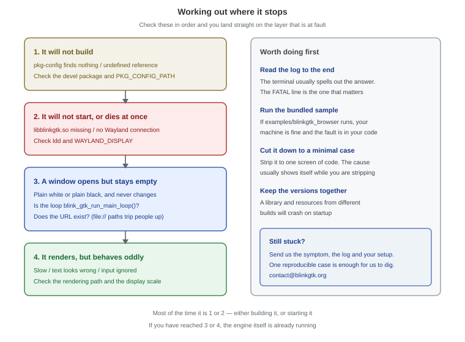
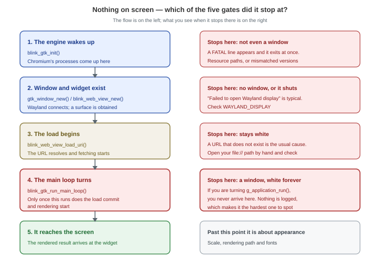

Author: BlinkGTK Project
Version: 1.2.0-build8
This page is for when something does not work. It is arranged so you
can look
things up by symptom.
If you hit something that is not listed here, please tell
us. One
reproducible case is enough for us to chase it down. Contact details are
at the
bottom of this page.

Figure 1: the order to check in Work down the list and you land straight on the layer that is at fault.
Before hunting for a cause, these three settle most cases.
1. Read the log all the way through
The terminal usually spells out the answer. The FATAL
line is the one that
matters. Even if it is long, do read to the end.
2. Run the bundled sample
Whether blinkgtk_browser in the distribution's
examples/ runs tells you a
great deal.
cd /usr/share/doc/blinkgtk-0.1/examples
make
./blinkgtk_browser https://example.com/If it runs, your machine is fine and the fault is in
your own code. If it
does not, the fault is in the environment.
3. Cut it down to a minimal case
Strip it to one screen of code. The cause often shows itself while
you are
stripping. If it still reproduces, send us that code as it stands and we
can
take it from there.
This is the most common thing people ask about — a window opens, but
the inside
stays white, or black.

Figure 2: the five gates What you see depends on where it stopped.
This is by far the most frequent cause. Writing
things the GtkApplication
way, it is natural to end up with:
/* This will not render anything */
return g_application_run(G_APPLICATION(app), argc, argv);g_application_run() turns GTK's loop but not
Chromium's. The load never
commits, so the window stays white indefinitely.
What makes it awkward is that it compiles and starts
perfectly. There is no
error and no warning.
/* Turn this one instead */
return blink_gtk_run_main_loop();To combine it with GtkApplication, present your window
in activate and then
turn blink_gtk_run_main_loop(). The shape of that is
in
Integrate into your
application.
The next most common cause, and file:// paths in
particular.
blink_web_view_load_uri(view, "file:///home/you/test.html");Paste that path into an ordinary browser's address bar. If it does
not open
there, it will not open in BlinkGTK either.
When using a data: URL, take care not to include
#. Everything after it
is treated as a fragment and cut off. Write a CSS colour as
#ffe and the rest
of your HTML disappears.
/* Truncated */
"data:text/html,<body style='background:#ffe'>..."
/* Either of these works */
"data:text/html,<body style='background:rgb(255,255,238)'>..."
"data:text/html,<body style='background:%23ffe'>..."BLINKGTK_GPU_MODE switches the rendering path. If
nothing appears with the
default, try another one.
BLINKGTK_GPU_MODE=software ./your-appsoftware is the most straightforward path and runs
anywhere. Seeing whether
it renders there tells you whether the trouble is on the GPU side.
error while loading shared libraries: libblinkgtk.so.0: cannot open shared object fileFirst see where it is looking.
ldd ./your-app | grep -i blinkIf it says not found, point it at the library.
export LD_LIBRARY_PATH=/usr/lib64:$LD_LIBRARY_PATHInstalling from a package normally makes this unnecessary. If it
still cannot be
found, the install may have failed part-way.
Failed to open Wayland displayBlinkGTK is Wayland only. It does not run on X11.
echo $WAYLAND_DISPLAY # something like wayland-0 means you are fine
echo $XDG_SESSION_TYPE # wayland means you are fineIf these are empty or say x11, log back in on a Wayland
session. GNOME, KDE
Plasma and Sway all default to Wayland.
Over SSH or inside a container the Wayland socket is often not
visible. There
you need to pass both WAYLAND_DISPLAY and
XDG_RUNTIME_DIR.
Received signal 5 SIGTRAP
Check failed: ... (PA_NOTREACHED)The classic sign that the library and its resources come from
different
builds. libv8.so and
snapshot_blob.bin / v8_context_snapshot.bin
must
be kept together from the same build.
ls -la /usr/lib64/libv8.so /usr/lib64/blinkgtk/*.binWildly different dates mean they have been mixed. Reinstalling the
package is
the reliable fix. If you are running from an unpacked tarball, use the
unpacked
directory as a whole and do not mix its contents with
anything else.
If the bundled sample runs but your application does not, the way it
is linked
can be the cause.
readelf -d ./your-app | grep NEEDEDCheck that
libbase_allocator_partition_allocator_...allocator_shim.so
is
listed. If it is missing, the link line is incomplete.
gcc -o app app.c $(pkg-config --cflags --libs blinkgtk-0.1)Going through pkg-config brings in everything required.
Writing -lblinkgtk
by hand does not.
Package blinkgtk-0.1 was not found in the pkg-config search pathFind where the .pc file lives.
find / -name 'blinkgtk-0.1.pc' 2>/dev/nullThen point pkg-config at that directory.
export PKG_CONFIG_PATH=/usr/lib64/pkgconfig:$PKG_CONFIG_PATH
pkg-config --cflags --libs blinkgtk-0.1If it is nowhere to be found, the development
package is not installed. Get
it from the download page and install it.
# Fedora
sudo dnf install ./blinkgtk-bin-devel-<version>.fc44.x86_64.rpm
# Debian / Ubuntu
sudo apt install ./libblinkgtk-0.1-dev_<version>_amd64.debFull steps are in Install.
Often the order of the link line. Libraries go after your sources.
gcc -o app app.c $(pkg-config --cflags --libs blinkgtk-0.1) # right
gcc $(pkg-config --libs blinkgtk-0.1) -o app app.c # wrong way roundValueError: Namespace BlinkGTK not availablePoint it at the typelib.
export GI_TYPELIB_PATH=/usr/lib64/girepository-1.0:$GI_TYPELIB_PATH
python3 -c "import gi; gi.require_version('BlinkGTK','0.1'); print('ok')"The display scale may be involved. On fractional scales such as 1.25
or 1.5,
some parts are still being worked on.
BLINKGTK_GPU_MODE=software ./your-appPlease try whether that improves it. Either way — better or
not — telling us
your environment (distribution, desktop, scale) is a great
help.
Japanese typesetting is an area we put real effort into. If you find
behaviour
that departs from JLReq (Requirements for Japanese Text Layout), please
tell us
specifically how it differs. If you can send the HTML
that shows it, we will
use it directly in our testing.
Start by checking the rendering path.
BLINKGTK_GPU_MODE=software ./your-app # CPU rendering
BLINKGTK_GPU_MODE=egl ./your-app # GPU renderingWhich is faster depends on the machine.
Memory use is inevitably on the large side, since Chromium spreads
its work over
several processes. Budget a few hundred MB per WebView.
If scrolling or clicking has no effect, try the same gesture on the
bundled
sample first. If it works there, the cause is often how the widgets are
stacked,
or a controller intercepting the events.
The lines you are most likely to meet, and what they mean.
| Log line | Meaning | Where to look |
|---|---|---|
Failed to open Wayland display |
No Wayland connection | WAYLAND_DISPLAY |
SIGTRAP / PA_NOTREACHED |
Mismatched versions broke an internal assumption | The library and its resources |
cannot open shared object file |
A library cannot be found | The output of ldd |
VK_ERROR_INITIALIZATION_FAILED |
GPU initialisation failed | Try BLINKGTK_GPU_MODE=software |
CONTEXT_LOST_WEBGL |
The GPU context was lost | Driver compatibility |
Always write the log to a file before reading it.
Terminal scrollback runs
out, and the first few lines — usually the important ones — are the
first to go.
./your-app 2>&1 | tee blinkgtk.logTo see the rendering itself, frames can be written out as images.
BLINKGTK_FRAME_PNG_DIR=/tmp/frames ./your-appPlain white PNGs mean nothing is being rendered at all; a correct
picture that
never reaches the screen points at the hand-off after rendering. The
full list
is in Environment
variables.
Please just ask. We do not have many users yet,
which means we can look at
each report properly.
Four things make our side of the investigation much faster.
It does not need to be well written. "The window stays white and
nothing
appears" is enough for us to start narrowing it down with you.